|

| ||||
| teem | / | nrrd | / | demo |
Making Visible Female CT Hands |
As done with the Visible Male frozen CT head, first you need to get the data and set up some symlinks:
ln -s ......./VisibleHuman/female/radiological/normalCT data ln -s ......./VisibleHuman/female/radiological/normalCTHeaders hdrs
The slices for the hands never change resolution, so looking at any one of the header files should provide sufficient guidance. From hdrs/c_vf1700.txt:
width.................................: 512 height................................: 512 ... Slice Thickness (mm).....................: 1 Image matrix size - X....................: 512 Image matrix size - Y....................: 512 Display Field of view - X (mm)...........: 480 Display Field of view - Y (if different).: 0 Image dimension - X......................: 480 Image dimension - Y......................: 480 Image pixel size - X.....................: 0.9375 Image pixel size - Y.....................: 0.9375
480 mm / 512 pixels = 0.9375 mm/pixel, which implies cell centering, but "unu make" doesn't make it easy to specify this, so we won't. Byte skip is 3416 (as indicated by the "length" field of the "Image File Header"). To inspect this slice:
zcat data/c_vf1700.fre.Z \ | unu make -t ushort -e raw -en big -s 512 512 -bs 3416 \ | unu quantize -b 8 \ | unu save -f pnm | xv -
Using this, we can see which slices comprise the volume of interest. For the left hand, the slices in question are 1690 to 1849, which is 160 slices. Above 1690 the arm starts getting clipped by the scanner's field of view, below 1849 there's no more left hand. First make a maximum intensity projection in order to see where to crop (the cropping done here was based on inspecting proj0.png with xv:
cp data/c_vf169?.fre.Z .
cp data/c_vf17??.fre.Z .
cp data/c_vf18{0,1,2,3,4}?.fre.Z .
uncompress *.Z
unu make -i *.fre -t ushort -e raw -en big -s 512 512 160 -bs 3416 \
| unu project -a 2 -m max \
| unu quantize -b 8 -o projL.png
unu crop -i projL.png -min 5 106 -max 154 257 -o projL-crop.png
| 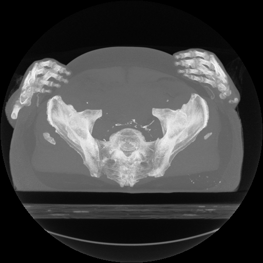 | 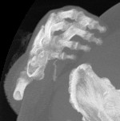 |
| projL.png | projL-crop.png |
Knowing the cropping bounds, the right hand volume vflhand.nhdr is created as follows:
unu make -i *.fre -t ushort -e raw -en big -s 512 512 190 -bs 3416 \ -sp 0.9375 0.9375 1.0 -c c_vf1640.fre-c_vf1829.fre \ | unu crop -min 324 84 0 -max 499 270 M -o vflhand.nhdr rm -rf *.fre
For the right hand, the slices in question are more like 1640 to 1829, which is 190 slices. The wrist is higher on the right hand, and unfortunately since the other arm is being clipped in the field of view, the slices from 1640 to 1690 are degraded because of tomography artifacts. Again, the cropping is determined by inspecting the MIP with xv:
cp data/c_vf16{4,5,6,7,8,9}?.fre.Z .
cp data/c_vf17??.fre.Z .
cp data/c_vf18{0,1,2}?.fre.Z .
uncompress *.Z
unu make -i *.fre -t ushort -e raw -en big -s 512 512 190 -bs 3416 \
| unu project -a 2 -m max \
| unu quantize -b 8 -o projR.png
unu crop -i projR.png -min 324 84 -max 499 270 -o projR-crop.png
| 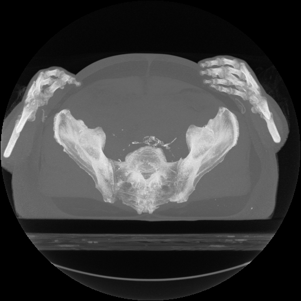 | 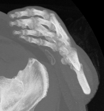 |
| projR.png | projR-crop.png |
As before, knowing the cropping extents, the right hand volume vfrhand.nhdrcan be created in one shot:
unu make -i *.fre -t ushort -e raw -en big -s 512 512 190 -bs 3416 \ -sp 0.9375 0.9375 1.0 -c c_vf1640.fre-c_vf1829.fre \ | unu crop -min 324 84 0 -max 499 270 M -o vfrhand.nhdr rm -rf *.fre
One nice way to quickly get a sense of internal structures, without setting up a transfer function, is to do a summation projection of gradient magnitude (followed by 80% histogram equilization):
mrender -i vflhand.nhdr \ -up -1 0 0.4 -fr -0.1 -10 4.1 -rh \ -dn -1 -di 0 -df 1 -ar \ -ur -1 1 -vr -1 1 \ -is 300 300 -nt 30 \ -k00 cubic:1,0 -k11 cubicd:1,0 \ -q gmag -m sum -step 0.008 -o - \ | unu heq -b 3000 -s 1 -a 0.7 \ | unu quantize -b 8 -o gradL.png mrender -i vfrhand.nhdr \ -up 1 -0.5 0 -fr -2 -10 2 -rh \ -dn -1 -di 0 -df 1 -ar \ -ur -1 1 -vr -1 1 \ -is 300 300 -nt 30 \ -k00 cubic:1,0 -k11 cubicd:1,0 \ -q gmag -m sum -step 0.008 -o - \ | unu heq -b 3000 -s 1 -a 0.7 \ | unu quantize -b 8 -o gradR.png
| 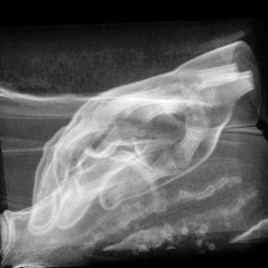 | 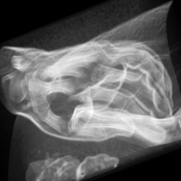 |
| gradR.png | gradL.png |
Notice that the hip bone appears in both datasets, which is unfortunate. It can be removed. What's done below is very unclever- connected components might be able to do this in fewer steps, but because the hip bone can be isolated in the (X,Y) coordinates in projections of slabs, this is more direct. In each slab, the hip bone region is clamped in value to the soft tissue value, so that the bone voxels are no longer bright. The setenv NRRD_STATE_DISABLE_CONTENT is to turn off the updatating of the nrrd content field, since it will become meaninglessly long and convoluted. All these cropping/inset ranges were determined by inspecting images of MIPs made by unu project. The very last unu join joins the fixed slabs together, and the unu axinfo reinstates the spacing information that would otherwise be lost.
setenv NRRD_STATE_DISABLE_CONTENT unu crop -i vflhand.nhdr -min 0 0 0 -max M M 29 -o fix0.nrrd unu project -i fix0.nrrd -a 2 -m max \ | unu quantize -b 8 -o bL0.png unu crop -i fix0.nrrd -min 94 123 0 -max M M M \ | unu 2op min - 1050 \ | unu inset -i fix0.nrrd -s - -min 94 123 0 -o fix0.nrrd unu project -i fix0.nrrd -a 2 -m max \ | unu quantize -b 8 -o aL0.png unu crop -i vflhand.nhdr -min 0 0 30 -max M M 59 -o fix1.nrrd unu project -i fix1.nrrd -a 2 -m max \ | unu quantize -b 8 -o bL1.png unu crop -i fix1.nrrd -min 83 91 0 -max M M M \ | unu 2op min - 1050 \ | unu inset -i fix1.nrrd -s - -min 83 91 0 -o fix1.nrrd unu project -i fix1.nrrd -a 2 -m max \ | unu quantize -b 8 -o aL1.png unu crop -i vflhand.nhdr -min 0 0 60 -max M M 89 -o fix2.nrrd unu project -i fix2.nrrd -a 2 -m max \ | unu quantize -b 8 -o bL2.png unu crop -i fix2.nrrd -min 84 79 0 -max M M M \ | unu 2op min - 1050 \ | unu inset -i fix2.nrrd -s - -min 84 79 0 -o fix2.nrrd unu project -i fix2.nrrd -a 2 -m max \ | unu quantize -b 8 -o aL2.png unu crop -i vflhand.nhdr -min 0 0 90 -max M M 119 -o fix3.nrrd unu project -i fix3.nrrd -a 2 -m max \ | unu quantize -b 8 -o bL3.png unu crop -i fix3.nrrd -min 98 77 0 -max M M M \ | unu 2op min - 1050 \ | unu inset -i fix3.nrrd -s - -min 98 77 0 -o fix3.nrrd unu project -i fix3.nrrd -a 2 -m max \ | unu quantize -b 8 -o aL3.png unu crop -i vflhand.nhdr -min 0 0 120 -max M M M -o fix4.nrrd unu project -i fix4.nrrd -a 2 -m max \ | unu quantize -b 8 -o bL4.png unu crop -i fix4.nrrd -min 111 94 0 -max M M M \ | unu 2op min - 1050 \ | unu inset -i fix4.nrrd -s - -min 111 94 0 -o fix4.nrrd unu project -i fix4.nrrd -a 2 -m max \ | unu quantize -b 8 -o aL4.png unu join -i bL?.png -a 0 -o bL.png unu join -i aL?.png -a 0 -o aL.png rm -f bL?.png aL?.png unu join -i fix?.nrrd -a 2 \ | unu axinfo -a 2 -sp 1.0 -o vflhand-nohip.nhdr rm -f fix?.nrrd
| 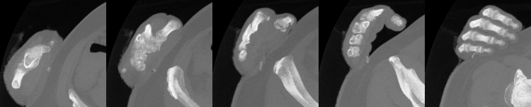 |
| bL.png (before, left) |
| 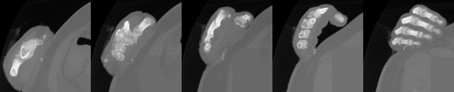 |
| aL.png (after, left) |
Now for the right hand. Same game:
unu crop -i vfrhand.nhdr -min 0 0 0 -max M M 39 -o fix0.nrrd unu project -i fix0.nrrd -a 2 -m max \ | unu quantize -b 8 -o bR0.png echo No value clamping needed here cp bR0.png aR0.png unu crop -i vfrhand.nhdr -min 0 0 40 -max M M 79 -o fix1.nrrd unu project -i fix1.nrrd -a 2 -m max \ | unu quantize -b 8 -o bR1.png unu crop -i fix1.nrrd -min 0 138 0 -max 79 M M \ | unu 2op min - 1050 \ | unu inset -i fix1.nrrd -s - -min 0 138 0 -o fix1.nrrd unu project -i fix1.nrrd -a 2 -m max \ | unu quantize -b 8 -o aR1.png unu crop -i vfrhand.nhdr -min 0 0 80 -max M M 119 -o fix2.nrrd unu project -i fix2.nrrd -a 2 -m max \ | unu quantize -b 8 -o bR2.png unu crop -i fix2.nrrd -min 0 99 0 -max 86 M M \ | unu 2op min - 1050 \ | unu inset -i fix2.nrrd -s - -min 0 99 0 -o fix2.nrrd unu project -i fix2.nrrd -a 2 -m max \ | unu quantize -b 8 -o aR2.png unu crop -i vfrhand.nhdr -min 0 0 120 -max M M 159 -o fix3.nrrd unu project -i fix3.nrrd -a 2 -m max \ | unu quantize -b 8 -o bR3.png unu crop -i fix3.nrrd -min 0 93 0 -max 73 M M \ | unu 2op min - 1050 \ | unu inset -i fix3.nrrd -s - -min 0 93 0 -o fix3.nrrd unu project -i fix3.nrrd -a 2 -m max \ | unu quantize -b 8 -o aR3.png unu crop -i vfrhand.nhdr -min 0 0 160 -max M M 189 -o fix4.nrrd unu project -i fix4.nrrd -a 2 -m max \ | unu quantize -b 8 -o bR4.png unu crop -i fix4.nrrd -min 0 113 0 -max 49 M M \ | unu 2op min - 1050 \ | unu inset -i fix4.nrrd -s - -min 0 113 0 -o fix4.nrrd unu project -i fix4.nrrd -a 2 -m max \ | unu quantize -b 8 -o aR4.png unu join -i bR?.png -a 0 -o bR.png unu join -i aR?.png -a 0 -o aR.png rm -f bR?.png aR?.png unu join -i fix?.nrrd -a 2 \ | unu axinfo -a 2 -sp 1.0 -o vfrhand-nohip.nhdr rm -f fix?.nrrd
| 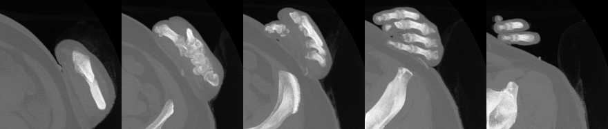 |
| bR.png (before, right) |
| 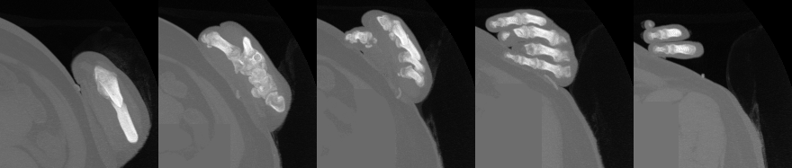 |
| aR.png (after, right) |
Then, we'll make new renderings to verify that the hip is gone:
mrender -i vflhand-nohip.nhdr \ -up -1 0 0.4 -fr -0.1 -10 4.1 -rh \ -dn -1 -di 0 -df 1 -ar \ -ur -1 1 -vr -1 1 \ -is 300 300 -nt 30 \ -k00 cubic:1,0 -k11 cubicd:1,0 \ -q gmag -m sum -step 0.008 -o - \ | unu heq -b 3000 -s 1 -a 0.7 \ | unu quantize -b 8 -o gradL2.png mrender -i vfrhand-nohip.nhdr \ -up 1 -0.5 0 -fr -2 -10 2 -rh \ -dn -1 -di 0 -df 1 -ar \ -ur -1 1 -vr -1 1 \ -is 300 300 -nt 30 \ -k00 cubic:1,0 -k11 cubicd:1,0 \ -q gmag -m sum -step 0.008 -o - \ | unu heq -b 3000 -s 1 -a 0.7 \ | unu quantize -b 8 -o gradR2.png unu crop -i gradL2.png -min 0 60 -max M m+177 \ | unu resample -s 143 85 -o _gradL2.png
| 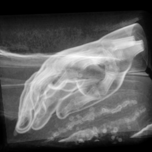 | 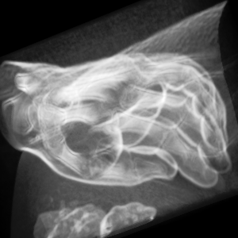 |
| gradR2.png | gradL2.png |